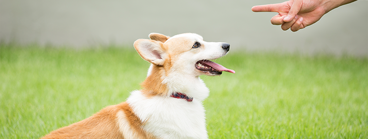

초보집사 가이드
강아지 가이드
고양이 가이드
기타 동물 가이드
반려동물 생활용품
사료
장난감
기타 생활 용품
반려동물 건강관리
상세 관리
강아지 훈련 가이드

'앉아!' 가르치기
강아지에게 앉는 행동을 훈련시키는 방법에 대해 알아봐요
'엎드려!' 가르치기
강아지에게 엎드리는 행동을 훈련시키는 방법에 대해 알아봐요
'기다려!' 가르치기
강아지에게 기다리는 행동을 훈련시키는 방법에 대해 알아봐요
'이리와!' 가르치기(콜링 훈련)
강아지를 불렀을 때 보호자에게 오도록 훈련시키는 방법에 대해 알아봐요